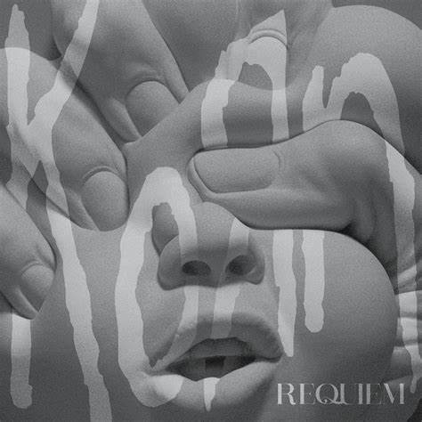
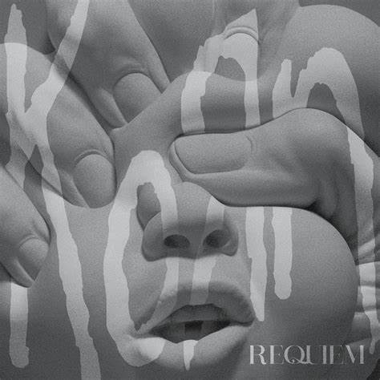

Para mim korn é uma banda com muita história e músicas moralizantes que representam problemas na sociedade e dentro de nós.

 

KoЯn
Músicas
Algumas músicas da banda:
All in the family do álbum The essential korn
Lost in the grandeur do álbum Requiem mass deluxe
Make me bad do álbum Issues
Twisted transistor do álbum see you on the other side
Right now do álbum Greatest hits vol.1
Children of the korn do álbum Follow the leader
Introdução
Korn (estilizado como KoRn ou KoЯn) é uma banda de nu metal de Bakersfield, Califórnia. Frequentemente levam o crédito de ser os pioneiros do gênero nu metal e ter inspirado a onda de nu metal, metal alternativo e influenciado bandas de rapcore no meio dos anos 1990 e começo do século XXI, ajudando, em particular, Limp Bizkit (banda que foi descoberta pelo Korn) e junto a eles disseminaram o nu metal pelo mundo todo.
História
L.A.P.D. e formação (1989–93)
Os Korn tem as suas origens no começo dos anos 1990, mais concretamente em 1992, em Bakersfield, uma pequena cidade árida ao oeste do "Vale da Morte (Death Valley)". Na adolescência, o baterista David Silveria, o guitarrista Munky e o baixista Fieldy tocam nos L.A.P.D.. Logo depois de gravar um disco com um vocalista provisório a banda acaba. Eles não conseguem ficar separados por muito tempo, voltando como Creep já com o guitarrista Head como membro definitivo.
Em 1993, quando Munky e Head estavam de saída de um bar, ouviram a voz de Jonathan Davis, que cantava pela banda SexArt, então ficaram impressionados tanto pelos talentos vocais quanto pela sua atitude insana e decidiram ficar até o final do concerto para então convidarem Jonathan a entrar na banda.
Jonathan chegou a titubear pois não estava certo sobre a decisão de entrar para o grupo, então ele consultou uma cartomante antes de aceitar o convite, pois a mesma alertou-o que estaria sendo estúpido se não aceitasse. Dito isso, Jonathan integrou a banda e os Korn estavam formados.
Com a entrada de Jonathan Davis o som do grupo ganha uma atmosfera mais sombria, misturando elementos de música pesada, pós-punk, rock industrial e uma levada de funk estado-unidense, com letras que relatam experiências autobiográficas do vocalista, atingindo em cheio a juventude desiludida com as mentiras políticas, violência, opressão religiosa e a hipocrisia da sociedade contemporânea.
Além das letras realistas de Jonathan, a banda destacava-se pelo uso de guitarras de sete cordas (ao invés das tradicionais de seis), dando uma tonalidade mais grave às melodias devido também às baixas afinações. Fieldy também não se contenta com quatro cordas no seu baixo, adicionando mais uma ao instrumento além de se destacar devido à sua abordagem percussiva do instrumento, que muitas vezes pode ser confundido com as levadas de bateria.
Em 1996, o Korn faz história na Internet, sendo a primeira banda a promover um programa de rádio interativo online. A intenção é lançar o segundo álbum, Life is Peachy. Nessa época eles já contavam com uma legião de dois milhões de fãs, além de turnês cada vez maiores e uma crescente presença na mídia, junto à bandas da mesma gravadora, a holandesa RoadRunner Records.
Mais uma coisa inusitada acontece, quando um menino de 14 anos com uma doença terminal pede para encontrar a banda por alguns minutos através da Make a Wish Foundation. A banda fica chocada, mas atende o pedido do menino, e o visitam por dias, isso mais tarde viria a se tornar a canção que leva o nome do menino, Justin.
A banda esteve no Brasil seis vezes, a primeira em 2002, ainda divulgando o álbum Issues (Untouchables estava para ser lançado) em uma turnê pela América Latina, passando pela cidade de São Paulo onde tocou no Credicard Hall dois dias seguidos (11 e 12 de março). Seis anos depois eles voltam fazendo parte da turnê de Ozzy Osbourne que também teve a participação da banda Black Label Society como bandas de abertura. Nesta turnê, as três bandas tocaram no Rio de Janeiro e em São Paulo. Em 2010 eles fizeram show único no Brasil, em São Paulo no dia 21 de abril, tocando as músicas que foram votadas no blog oficial da banda, e também foi lançando o até então novo single Oildale (Leave me alone) que está no cd Korn III: Remember Who You Are" em 2013 no Monsters Of Rock no dia 19 de Outubro, festival que contou com bandas como Limp Bizkit,Slipknot e Hatebreed. Em 2015 participaram da sexta edição do festival Rock in Rio no Brasil, tocando no dia 19 de setembro no palco Sunset, mesmo dia que teve a banda Metallica como headliner. E em 2017, eles anunciaram uma turnê na América Latina, para divulgar o álbum "The Serenity Of Suffering", fazendo três shows no Brasil, um em São Paulo, em uma apresentação no Espaço das Américas, em 19 de abril, em Curitiba, no Live Curitiba, no dia 21, e em Porto Alegre, no Pepsi on Stage, em 23 de abril.
Korn: o álbum de estreia
Em 1994, os Korn lançam o seu primeiro álbum: Korn. Na altura, chegou às lojas como ilustre desconhecido, mas actualmente é considerado um marco pois lançou as bases do nu metal, um das ramificações do rock mais difundidas no final dos anos 1990 e início do século XXI. Deste álbum, podemos enumerar "Blind", "Clown", "Faget" e "Shoots and Ladders" tendo este último single sido nomeado para um Grammy de 1997 na categoria de Melhor Desempenho de Metal. As vendas do álbum chegaram à dupla platina (dois milhões de álbuns vendidos) o que é uma excelente marca para um álbum de estreia. No final de 1995 a banda reúne-se novamente nos estúdios para gravar o seu novo álbum.
Life is Peachy
Em 1996 chega às lojas o segundo álbum de originais do Korn: Life is Peachy. Este foi um sucesso e chegou mesmo ao terceiro lugar nas listas de vendas nos Estados Unidos, atingindo ainda assim a dupla platina. Os singles mais importantes foram "A.D.I.D.A.S.", "Good God", "Twist" e "No Place to Hide", este último é nomeado para um Grammy de 1998 também na categoria de Melhor desempenho de Metal. A banda passa por um duro revés na parte final da turnê por motivos de doença do guitarrista Munky. Deste modo, começam mais cedo a gravar o seu próximo LP, denominado mais tarde Follow the Leader.
Follow the Leader
Em 1998, os Korn atingem o auge ao lançarem Follow the Leader. Este álbum é um êxito instantâneo e sem precedentes: chega ao primeiro lugar nas paradas de vendas dos Estados Unidos e atinge a quíntupla platina (cinco milhões de álbuns vendidos nos EUA), e 8 milhões em todo o mundo. "Got the Life" torna-se um dos grandes hits de 1998 e 1999 nas rádios estado-unidenses e "Freak on a Leash" ganha prémios e ovações por onde quer que passe, pois além da canção arrebatadora e da inovação de videoclipe (que foi pioneiro na apresentação do efeito bullet time, popularizado posteriormente no filme Matrix) conta com um desenrolar soberbo de animação assinado por Todd McFarlane, criador do personagem de quadrinhos Spawn. Nos VMA de 1999, "Freak on a Leash"" venceu duas categorias entre as nove nomeações possíveis, sendo um dos vencedores do evento naquele ano. Ainda nesse ano a MTV nomeia o videoclipe como o 30º melhor de sempre enquanto que a VH1 considera-o como o 22º melhor de sempre. Já em 2000, a canção ganhou um Grammy para Melhor videoclipe e ainda foi nomeado para Melhor Desempenho de Hard Rock. Os Korn criaram a sua própria gravadora, a Elementree Records (que trabalha com bandas como o Orgy) tendo conseguido um disco de ouro. Mas é também aos Korn que, nesta altura, descobrem os Limp Bizkit. Mas querendo mais, os Korn lançam-se para o quarto álbum de originais.
Issues
Em 1999, o Korn lança Issues, o mais trabalhado álbum do grupo. Chega imediatamente ao primeiro lugar nos topos de vendas e atinge a tripla platina (três milhões de álbuns). Os singles foram "Make Me Bad", "Somebody Someone", "Trash" e "Falling Away from Me" que é é nomeado para os VMA de 2000 na categoria de Melhor Videoclipe de Rock. Com este álbum, a banda vê uma vez mais recompensado o seu trabalho ao ser considerado o 53º Melhor artista de Hard Rock de sempre, pela VH1. No final de 2000, a banda é obrigada a cancelar alguns concertos devido a uma lesão muscular do baterista David Silveria.
Untouchables
O álbum mais polêmico sai apenas em 2002. Originalmente preparado para ser lançado a meio de 2001, este álbum teve vários adiamentos, primeiro porque não estava pronto para sair nas lojas e, depois, porque a banda quis só lançá-lo quando David Silveria tivesse recuperado da lesão. Neste álbum, os Korn misturaram o som tradicional do grupo com a electrónica, e, quando Untouchables chegou às lojas, ficou-se apenas pelo segundo lugar nos topos de vendas e atingiu apenas a platina (um milhão de álbuns), demonstrando uma menor aceitação por parte dos fãs a este novo som. Deste álbum, podemos enumerar "Here to Stay", "Thoughtless" e "Alone I Break". "Here to Stay" foi nomeado para os VMA de 2002 na categoria de Melhor videoclipe de Rock e ainda venceu um Grammy de 2003 na categoria de Melhor Desempenho de Metal. A banda, no final de 2002, teve que cancelar alguns concertos devido a problemas de voz com Jonathan Davis.
Take a Look in the Mirror
O sexto álbum de originais dos Korn, Take a Look in the Mirror, é lançado no final de 2003. O álbum atinge a platina nos EUA e vendas de 2 milhões em todo o mundo. É o álbum que confirma o descalabro dos Korn a nível de vendas. Apenas os concertos mantém uma afluência idêntica à do auge, em 1998. Deste álbum é retirado "Right Now", um vídeo de tal maneira violento que é banido da MTV, "Did My Time", trilha sonora do filme Tomb Raider: o Berço da Vida, "Everything I’ve Known" e "Y’all Want a Single", cujo videoclipe critica a indústria musical dos Estados Unidos. "Did My Time" é nomeado para um Grammy de 2004 na categoria de Melhor desempenho de Metal. A tournê deste álbum marca por ter sido a última vez que a banda se apresentou em Portugal com os membros originais, a 9 de Junho de 2004 no Super Bock Super Rock desse mesmo ano.
Greatest Hits, Vol.1
No final de 2004, os Korn lançaram a sua primeira colectânea: Greatest Hits, Vol. 1. Neste álbum, além de quase todos os grandes hits da banda, incluiu-se duas covers, "Word Up!" de Cameo e "Another Brick in the Wall" de Pink Floyd, e ainda uma versão remixada de "Freak on a Leash". Este álbum atingiu o quarto lugar de vendas nos Estados Unidos, atingindo um ano depois a marca do milhão de exemplares vendidos. Em Fevereiro de 2005, os Korn anunciaram a saída de Brian "Head" Welch, não por tradicionais divergências mas porque, já não se identifica com a música dos Korn, devido a sua declarada conversão ao cristianismo.
See You on the Other Side
No Verão deste mesmo ano, os Korn assinam um contrato com a editora Virgin Records, tendo lançado o novo disco, See You On The Other Side, a 6 de Dezembro de 2005. Entrou em terceiro nos topos dos Estados Unidos e em quatro semanas conseguiram vender 500 mil cópias. Deste álbum já saiu o single "Twisted Transistor", o maior sucesso a nível de singles dos Korn até hoje (atingiu o 3º lugar no top Modern Rock). O segundo single deste álbum, cujo videoclipe saiu em Março de 2006, foi "Coming Undone". É uma canção mais pesada que "Twisted Transistor", tendo uma batida bastante similar a "We Will Rock You" dos Queen.
O álbum já vendeu cerca de 2 milhões de cópias em todo o mundo, e chegou à platina nos EUA a 16 de Março. Também conseguiu manter-se no Top 100 da tabela Billboard 200 durante 34 semanas seguidas vendendo mais de 1,3 milhões de discos, o que também mostra o aumento de vendas em relação ao Take a Look in the Mirror, que movimentou nos Estados Unidos somente 1,1 milhões de cópias. A turnê mundial realizada para promover o disco teve bastante sucesso, com receitas de $6.4 milhões, atingindo o 47º posto no Top 100 de Receitas de Concertos de 2006, organizado pela Pollstar.
A 6 de Maio, os Korn ganharam um MTV Asia Video Music Award na categoria de "Vídeo preferido" com o primeiro single do See You on the Other Side, "Twisted Transistor", derrotando os Green Day, Kanye West, My Chemical Romance e Franz Ferdinand. A banda também tocou o single vencedor ao vivo durante o espectáculo.
"Untitled"
Após finalizada a digressão para promover o último trabalho, os Korn voltaram ao estúdio para gravar o que é até hoje o álbum mais experimental da banda. Lançado sem qualquer título oficial (segundo Davis, devem ser os fãs a dar o nome ao álbum), Untitled tem um som mais próximo do metal industrial, a lembrar Nine Inch Nails. Entrou directo para o segundo lugar nos tops de vendas dos EUA. O primeiro single do álbum foi Evolution, tendo mais tarde sido lançado Hold on.
Este álbum fica marcado pelo facto de ser o primeiro que não tem qualquer contribuição do baterista original David Silveria. Assim, para as gravações de estúdio participaram no seu lugar Terry Bozzio, Brooks Wackerman dos Bad Religion, e o próprio vocalista Jonathan Davis (já não fazia qualquer percussão desde Issues, em 1999). Entretanto, as performances ao vivo, pelo menos na turnê de Verão de 2007, ficaram a cargo do reconhecido baterista dos Slipknot, Joey Jordison. Foi certificado com dupla platina nos E.U.A
Korn III: Remember Who You Are
A banda terminou de gravar seu nono álbum, que foi lançado em 13 de julho de 2010, cuja sonoridade retoma as origens da banda: um nu metal agressivo com bastante peso e pegada, o álbum parece ter sido gravado em meados dos anos 90.
No dia 15 de março de 2010, foi anunciado na Ballroom Blitz Tour, o título do novo álbum, Korn III: Remember Who You Are. E no dia 23 de março, Ray anunciou que a banda assinou com a Roadrunner Records. No dia 6 de abril, a Harddrive Radio confirmou que "Oildale" será o primeiro single do álbum e será lançado no dia 12 de abril de 2010.
The Path of Totality
O álbum foi gravado em 2011 e teve como principal característica o Dubstep. A banda inovou formando um novo estilo que passou a ser conhecido como Dubmetal. A gravação do álbum contou com a participação de vários artistas do Dubstep.
Este álbum foi motivo de críticas por muitos fãs, mas conseguiu ficar em 10º lugar na Billboard logo após o seu lançamento.
The Paradigm Shift
No ano de 2013, a banda anunciou a volta do guitarrista "Head" no dia 2 de Maio, Head estava anteriormente apenas na banda Love and Death.
Em 26 de junho, o baterista Ray Luzier postou em seu Instagram que o novo álbum da banda chegará às lojas no dia 1º de outubro de 2013. Já em Outubro a banda também foi atração principal no primeiro dia do festival brasileiro Monsters of Rock, que aconteceu nos dias 19 e 20 de outubro, em São Paulo, ao lado de Aerosmith, Limp Bizkit, Whitesnake e Slipknot.
Jonathan Davis descreveu a composição das letras como: "estranha". Ele explica: "Eles começaram a escrever, eu acho que, em agosto, e eu não queria entrar no estúdio até março, porque eu estava passando por todos os tipos de problemas. Meu filho tem diabetes...".
O primeiro single, "Never Never", foi lançado oficialmente em 12 de agosto de 2013. A faixa "Love & Meth" vazou em 06 de setembro de 2013 depois que a banda havia lançado várias previas. A faixa "Lullaby for a Sadist" foi escrita originalmente em 2010, mas a música foi cortada de Korn III: Remember Who You Are (2011). "Spike In My Veins" foi originalmente escrita e gravada com Noisia para inclusão no álbum de estréia do projeto paralelo Jdevil, mas acabou sendo reformulada e inserida no álbum.
A recepção do álbum foi ótima, vendendo na primeira semana 46.000 cópias nos Estados Unidos, alcançando a 8ª colocação no Billboard 200. Este foi o 12º trabalho da banda, incluindo demos e EP's, a entrar no top 10. O álbum após o lançamento ganhou uma nova versão com mais músicas: "The Paradigm Shift World Tour Edition" incluindo a nova música "Hater" e pouco tempo depois a banda lançou a música "So Unfair".
The Serenity of Suffering
The Serenity of Suffering é o álbum de estúdio XII da banda Korn, lançado em 21 de outubro de 2016. De acordo com o guitarrista Brian Welch, "é o nosso material mais pesado dos últimos anos" e que contém a sua música mais intensa em um longo tempo vocal também.
A obra de arte contém elementos de quarto álbum do Korn, Issues , e foi criado por Ron English (artista). A atmosfera do álbum é um tanto mais sombria do que a dos álbuns recentes do Korn. O álbum também marca um retorno ao som característico da banda.
The Nothing
The Nothing é o décimo terceiro álbum do Korn lançado no dia 13 de setembro de 2019. O álbum conta com 13 faixas.
Em 2021, a música deles "Start the Healing" foi eleita pela Loudwire como a 19ª melhor música de metal de 2021.
Integrantes
Atuais
- Jonathan Davis "J Devil" - vocal, gaita-de-fole, piano (1993-presente), bateria (2006-2008)
- Reginald Arvizu "Fieldy" - baixo, vocal de apoio (1993-presente)
- James Shaffer "Munky" - guitarra, vocal de apoio, Talk Box (1993-presente)
- Brian Welch "Head" - guitarra, vocal (1993-2005, 2012-presente)
- Ray Luzier "Ray" - bateria (2008-presente)
Ex-integrantes
- David Silveria "Wally" - bateria (1993-2006)